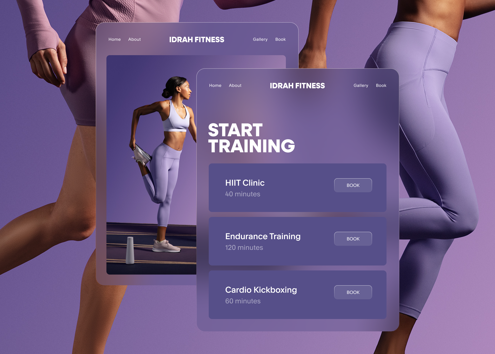
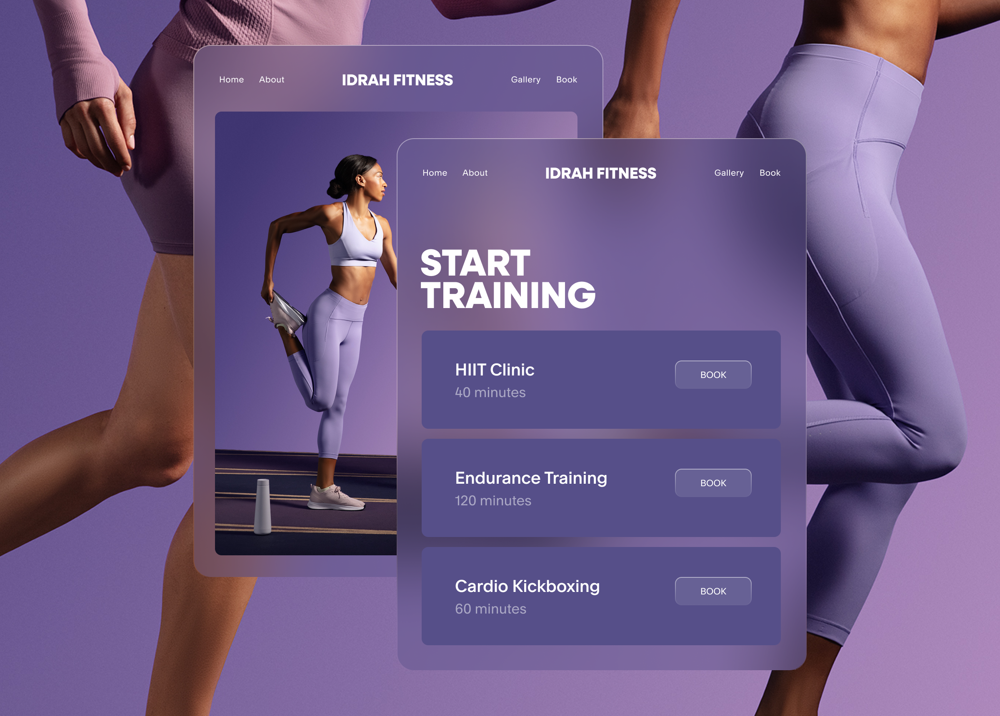

Visual identity
Acuity Scheduling
Squarespace acquired Acuity Scheduling in 2019. In the years since, Squarespace has integrated scheduling capabilities into its suite of selling tools, while continuing to scale Acuity as a standalone platform. My team was tasked with developing an identity for Acuity that would communicate this positioning. We were asked to give Acuity a distinct design system and art directorial style, equipping the brand to live on its own while nonetheless integrating into Squarespace communications.
Our solve pulls visual fodder from the scheduling process. The Acuity Scheduling color palette responds dynamically to the passage of time: keystone gradients map to parts of the day, meeting customers where they are in real time. A composition system uses grids and image masks to echo the language of calendar blocks. And the steady blinking colon of digital clocks acts as cornerstone for the brand, appearing in its wordmark, informing its proprietary motion, and expanding into a graphic language. We worked closely with Acuity's team to apply this identity across all surfaces, directing a photo and video shoot and developing meaningful brand expression across the product.
Creative Direction: Satu Pelkonen
Design lead: Albert Chang
Design: Mikki Janower and Robbie Reynolds
Motion design: Videl Torres
Photography: Craig Reynolds
Photo assistant: Spencer Blake
Photo retouching: Derek Kalisher


 
